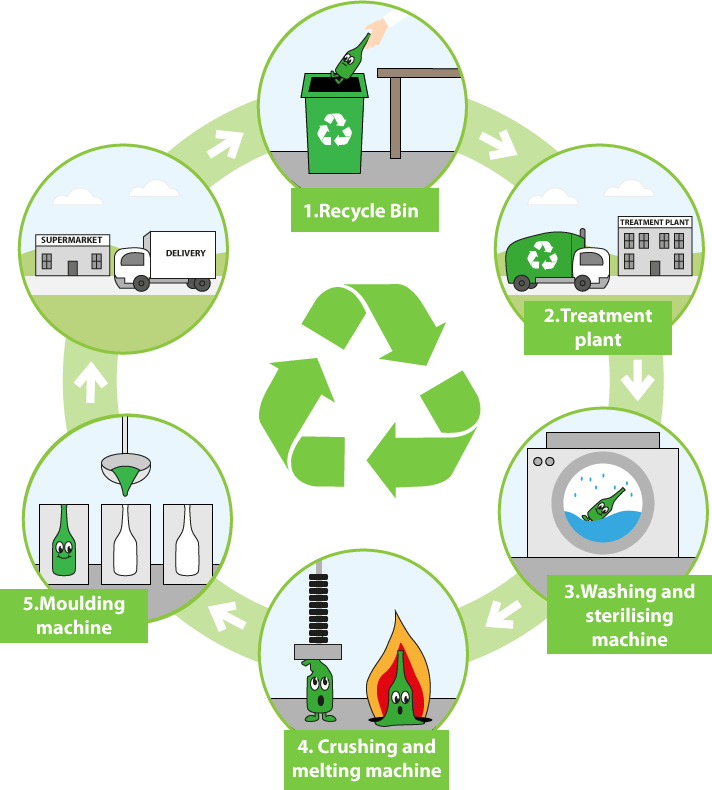

data statistics space
demo diagram of the day

The diagram illustrates a cyclical process of how glass is recycled, beginning with disposal and ending with the delivery of new glass products. The process is comprised of five main stages, with the central recycle symbol indicating its continuous nature.
The first stage involves the consumer placing used glass bottles into a recycle bin. From there, the glass is collected and transported to a treatment plant, marking the second stage. In the third stage, the glass is put through a washing and sterilising machine, a crucial step to clean the bottles and remove any labels or contaminants.
After being cleaned, the glass moves to the fourth stage, where it is fed into a crushing and melting machine. This machine crushes the glass and then heats it at very high temperatures, melting it down into a liquid. This molten glass is then transferred to a moulding machine, which is the fifth stage. In this final processing step, the liquid glass is moulded into new bottles or jars. The cycle is completed as these newly created glass containers are delivered to supermarkets, ready for sale and use once again.
- data statistics